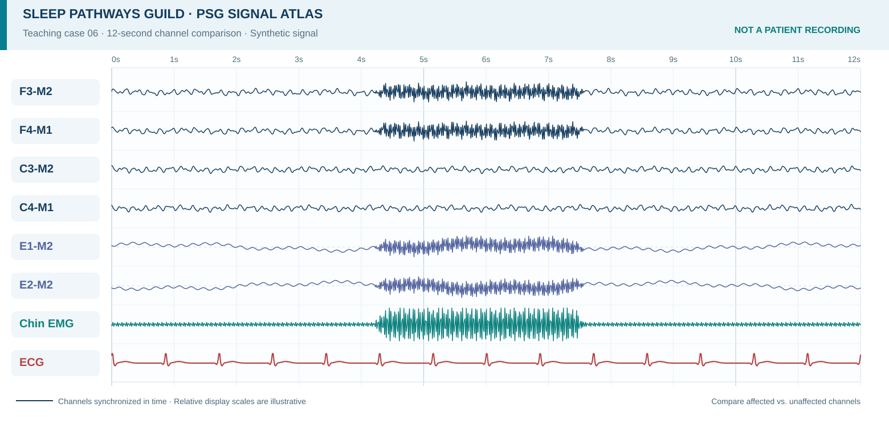
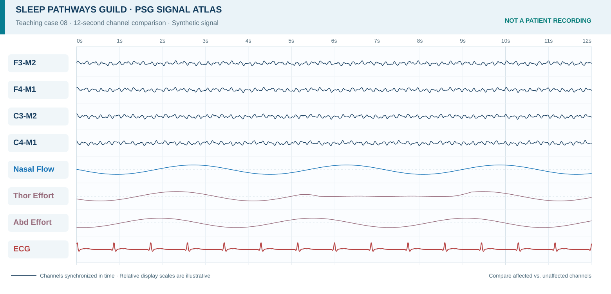

See the signal problem, trace the source, choose the next action
Work five original PSG-style artifact cases. Each case asks you to identify the artifact, identify the strongest evidence, and choose the best next technologist response. This lab does not use review checkboxes.
Your visual troubleshooting progress
Five cases · fifteen visual decisions
Cases cover electrode pop/unstable contact, ECG contamination, sweat or slow electrode-potential drift, line-frequency interference, and a shared-reference disturbance. Answer choices are re-ordered for each session. Completion requires answering all 15 decisions and scoring 80% or higher.
Compare more artifact patterns
These original synthetic PSG strips extend the five scored cases. Expand one example at a time to practice distinguishing real physiologic signals from recording problems. The images are not patient recordings or copied textbook figures.
Muscle activity near the jawHigh-frequency energy in chin EMG and nearby derivations

Look for irregular fast activity concentrated during facial or jaw muscle movement. Compare the chin EMG with EEG/EOG and patient observation; do not assume all high-frequency activity is cerebral.
Eye-blink contaminationOpposing EOG deflections with smaller frontal effects
Compare E1 and E2 polarity and timing. Eye movements are physiologic signals, but their spread into EEG channels can mimic slower cerebral activity.
Thoracic effort belt signal lossOne respiratory channel changes while independent sensors continue

When one effort channel loses its waveform but airflow and abdominal effort remain, investigate belt fit, cable, and signal integrity before concluding a physiologic respiratory event.
Textbook references guiding these original redraws
Pattern descriptions and troubleshooting concepts were checked against the Guild's library. No textbook image, patient tracing, publisher question, or AASM scoring-manual figure is reproduced.
- Attarian, H. P., & Morgan, M. Y. (Eds.). (2012). Atlas of electroencephalography in sleep medicine. Springer. See Chapter 5, Artifacts.
- Geyer, J. D., Carney, P. R., & Payne, T. A. (2010). Atlas of polysomnography (2nd ed.). Lippincott Williams & Wilkins. See Chapter 8, Artifacts.
- Gupta, R., Pandi-Perumal, S. R., & BaHammam, A. S. (2018). Clinical atlas of polysomnography. Apple Academic Press. See Chapter 12, Artifacts.